Projekt
Sanierung «Alte Käserei», Altbüron
Am Erpolingenweg in Altbüron haben wir die Fassade der alten Käserei saniert: vom alten Mauerwerk bis zum neuen Verputz.
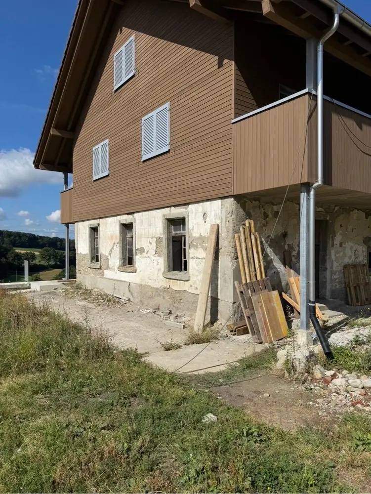
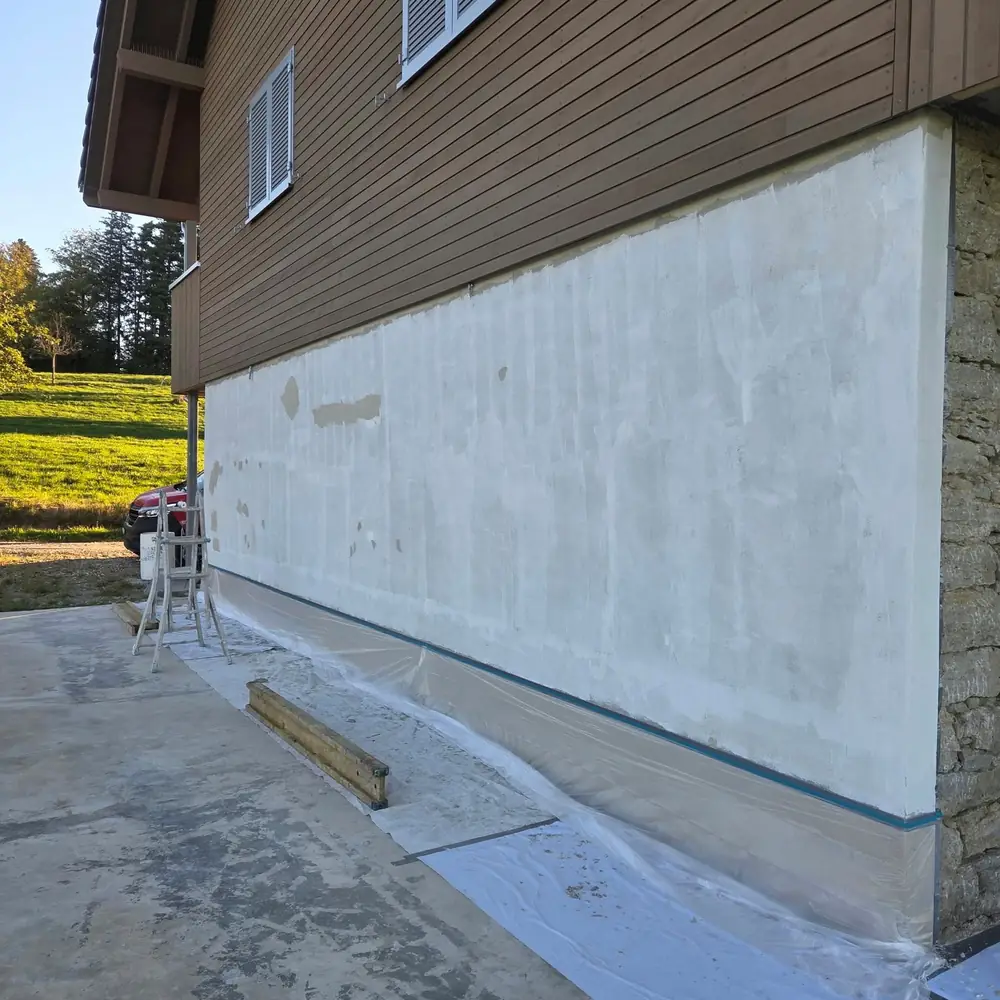
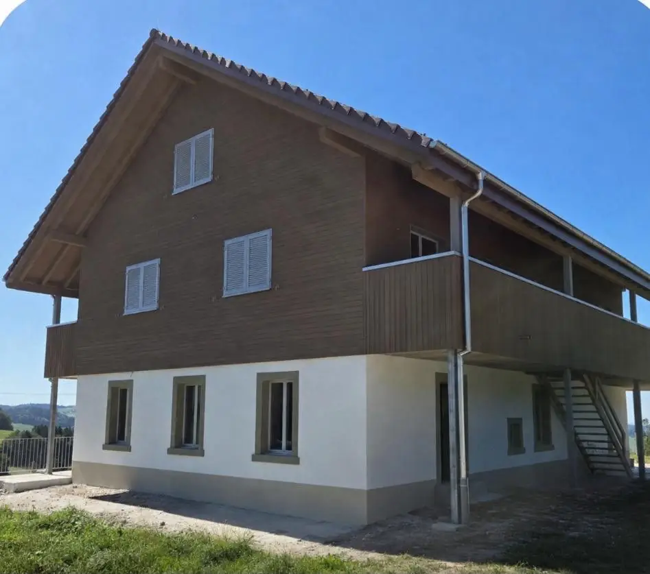
Vorher
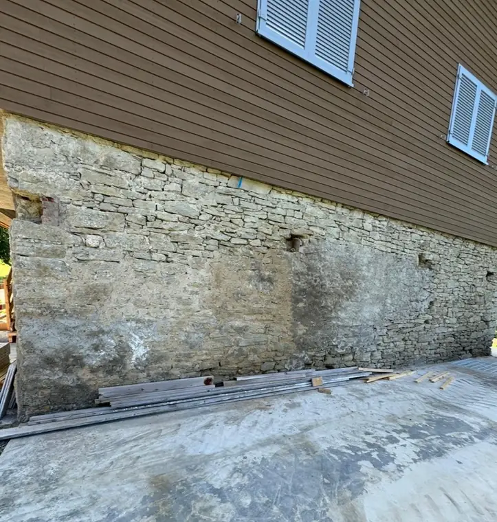
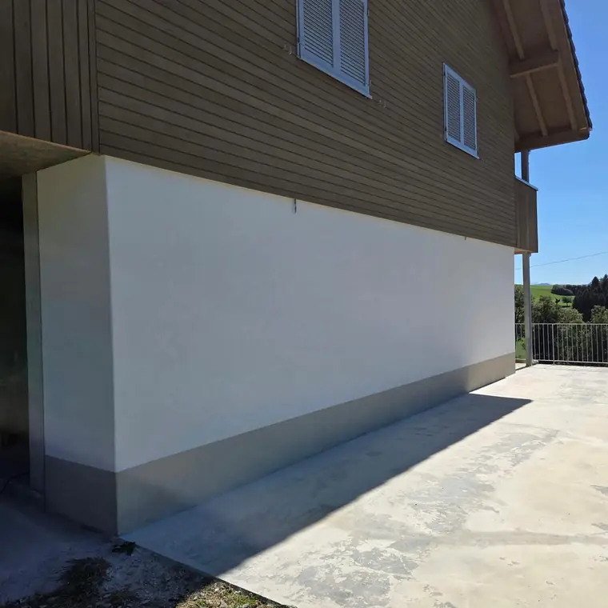
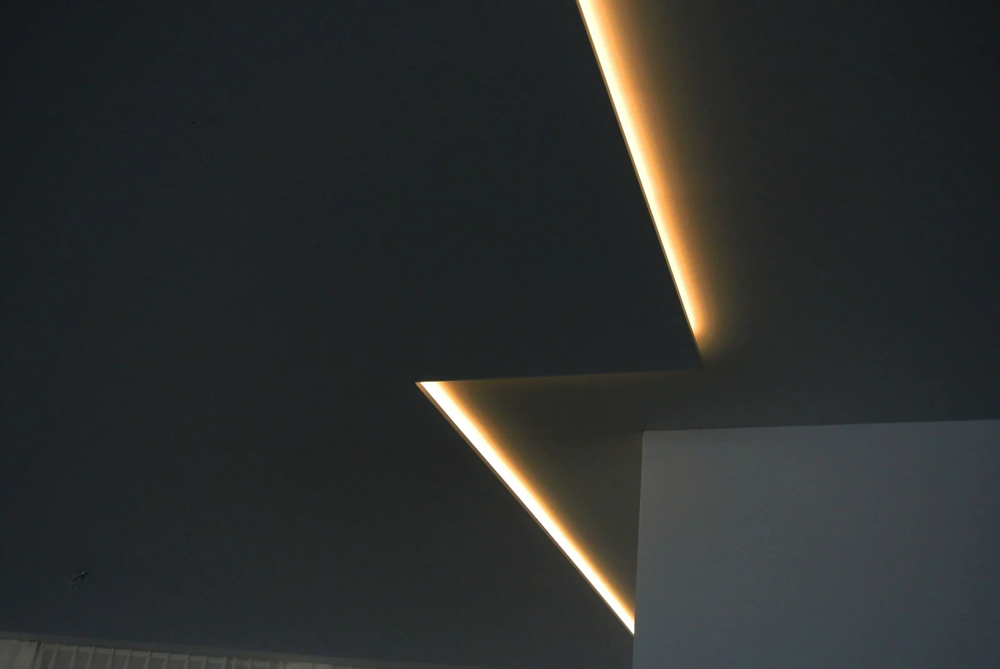
Kunz AG Gipsergeschäft Neuenkirch, seit 1978
Familienunternehmen in zweiter Generation, mit rund 20 Mitarbeitenden in der ganzen Zentralschweiz. Wir arbeiten präzise, sauber und termingerecht.
TrockenbauAbgehängte Decke mit indirekter Beleuchtung
Innen oder aussen: Wir stehen für Qualität, Zuverlässigkeit und einen Service, der sich ganz an Ihren Bedürfnissen orientiert.
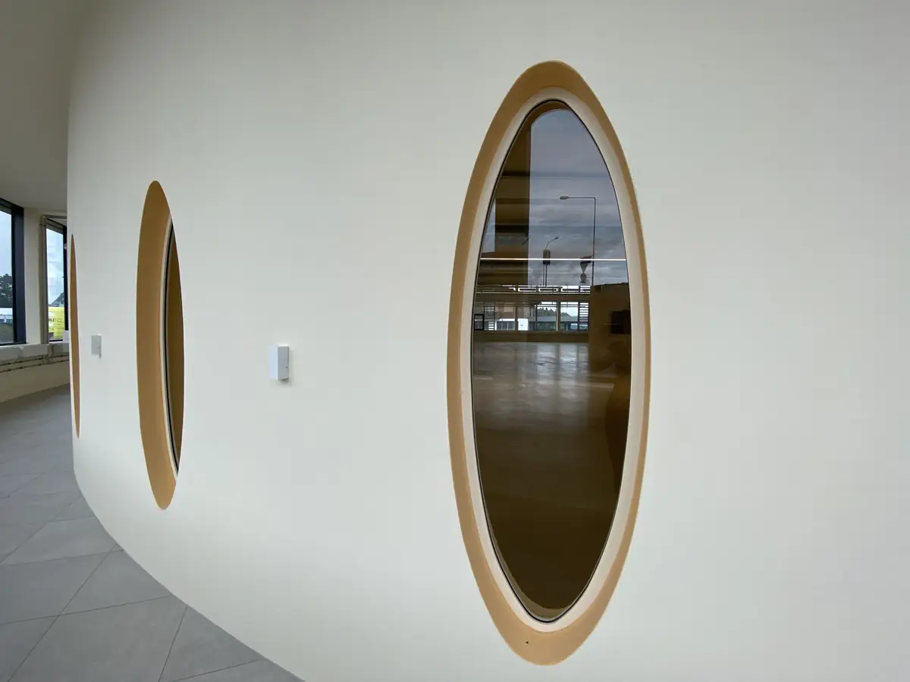
01 Innen
Nassputze, Lehmputze, Abriebe und Stuckaturen, bei Neu- und Umbauten sowie Renovationen. Als Endbeschichtung bieten wir Stucco-Wände in Spachteltechnik, Magnetputze und biologische Putze an.
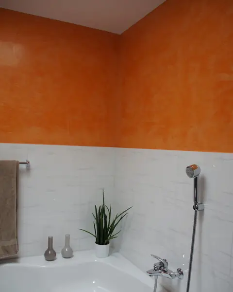
StuccoOrange Stuccowand Veneziano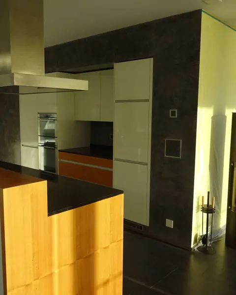
StuccoStuccowand Veneziano in Anthrazit und Zitronengelb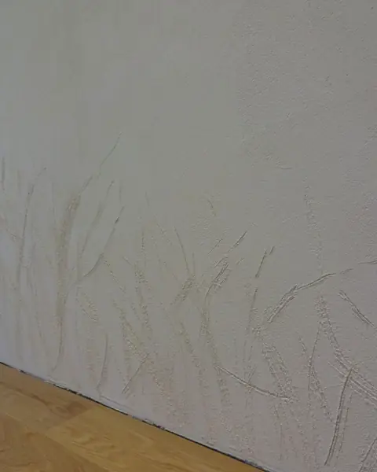
AbriebAbriebwand mit Freihandverzierung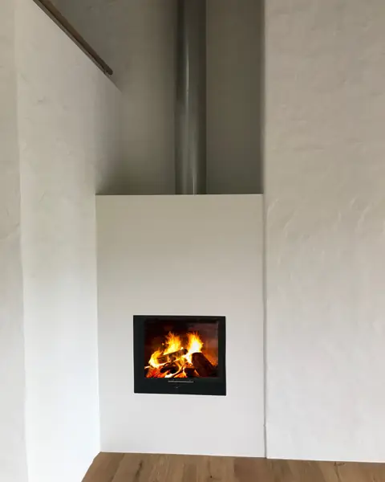
RustikalputzCheminée mit Rustikalputz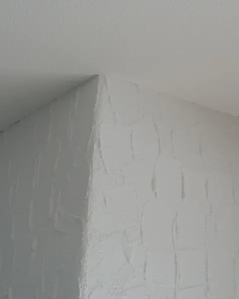
RustikalputzPfeiler mit Rustikalputz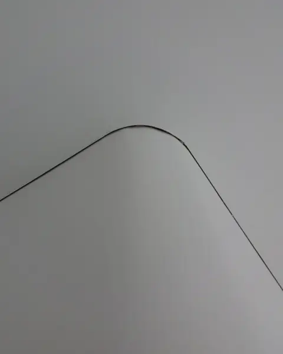
DetailSchattenfuge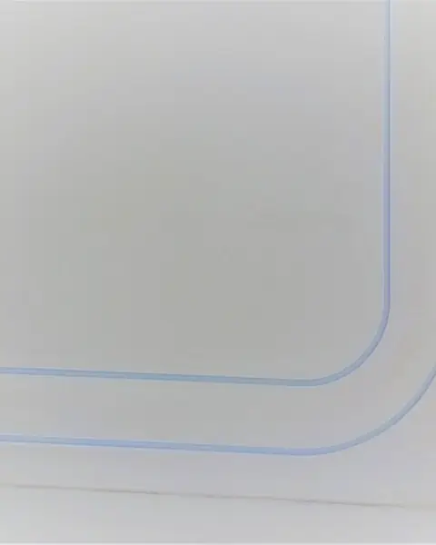
DetailVorhangschiene mit 90°-Bogen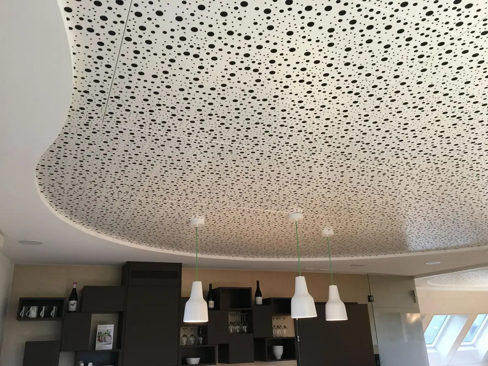
02 Trockenbau / Leichtbau
Beim Trockenbau kommen keine wasserhaltigen Baustoffe wie Beton oder Putz zum Einsatz. Lange Trocknungszeiten entfallen, die Arbeiten gehen deutlich schneller und sind in der Regel kostengünstiger als herkömmliches Mauerwerk.
Ansprechpartner: Stefan Kunz, stefan@gipser-kunz.ch
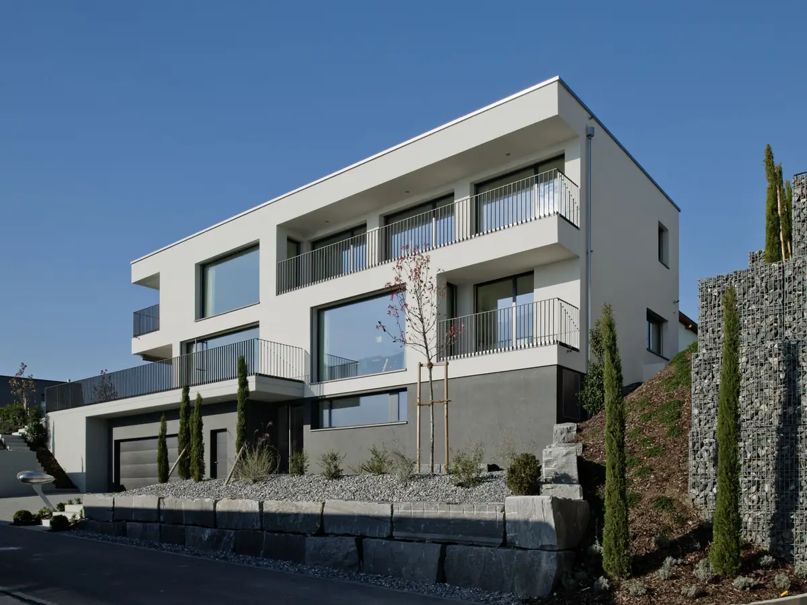
03 Aussenbereich / Fassade
Vom Neubau bis zur Sanierung alter Mauern: Wir dämmen, isolieren und verputzen Fassaden in der ganzen Zentralschweiz.
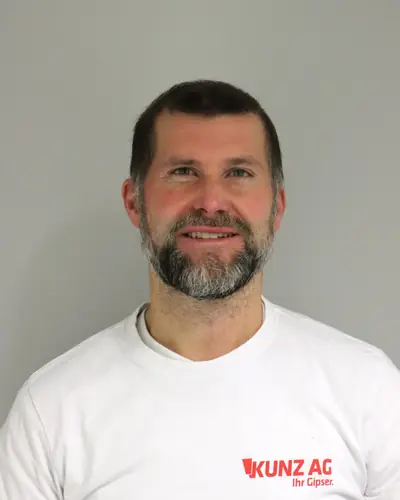
Ihr Ansprechpartner
Mathias Kunz
Mitglied der Geschäftsleitung, eidg. dipl. Gipser
mathias@gipser-kunz.chProjekt
Am Erpolingenweg in Altbüron haben wir die Fassade der alten Käserei saniert: vom alten Mauerwerk bis zum neuen Verputz.



Vorher


Ausbildung
Seit 2003 bilden wir eigene Lernende aus. Mehrere von ihnen haben es an die Schweizer Berufsmeisterschaften und weiter gebracht.
Seit August 2026 lernt Ledion Osmonaj bei uns Gipser-Trockenbauer EFZ.
Seit 1978
1978 gründet Meinrad Kunz den Betrieb als Einmannbetrieb, seine Frau Ida übernimmt von Beginn an das Büro. Heute führen die vier Kinder das Unternehmen in zweiter Generation.
Geschäftsleitung
Alle vier Kinder von Meinrad und Ida Kunz engagieren sich im Betrieb. Zusammen mit rund 20 Mitarbeitenden auf der Baustelle und im Büro.
Stefan Kunz
Geschäftsführer, eidg. dipl. Gipsermeister, Lehrlingsausbildner
Mathias Kunz
Mitglied der GL, eidg. dipl. Gipser, Technischer Kaufmann mit eidg. FA
Monika Kunz
Mitglied der GL, Kauffrau EFZ
Brigitte Kunz
Mitglied der GL, Büroassistentin
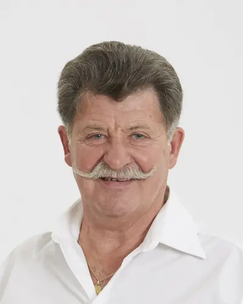
Meinrad Kunz
Firmengründer
Kundenstimmen
«Wir sind sehr zufrieden, super Arbeit und auch Ordnung auf der Baustelle.»
«Vielen Dank für eure Arbeit. Das ist tipptopp geflickt.»
«Die Decke und der Raumtrenner sehen wunderschön aus. Vielen Dank dafür.»
Kontakt
Sie erreichen uns per Telefon 041 467 18 14 oder per E-Mail info@gipser-kunz.ch. Für eine Offerte schicken Sie uns Ihr Anliegen mit der Objektadresse.